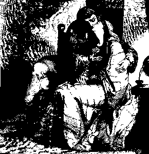

Loiza hag Abalard

Ton
"Loiza" chanté par Andrea Ar Gouilh accompagnée
à la harpe par Alain Cochevelou (Alan Stivell): str. 1, 7, 8, 9, 24
|
1. Ne oan nemed daouzek vloaz
pa guitiz ti va zad pa guitiz ti va zad Pa oan aet gant va c'hloareg, La la lan la la ri la Pa oan aet gant va c'hloareg, va Abalardig mat. 2. Pa oan-me aet d'an Naoned gant va dousig kloareg, Ne ouien yezh, va Doue, nemet ar brezhoneg. 3. Ne ouien tra, va Doue, 'met laret va "fater", Pa oan-me plac'hig bihan e ti va zad er gêr. 4. Hogen bremañ, desket on, desket on mat a-grenn! Me oar Galleg ha Latin, me oar skrivañ ha lenn. 5. Ya, lenn e levr an Aviel, ha skrivañ mat ha pre'eg. Ha sakriñ ar bara-kann, kerkoulz ha pep beleg. 6. Ha miret ouzh ar beleg da lar e oferenn, Ha skoulmañ an alc'houiltenn e-kreiz hag en daou benn. 7. Me oar kaout an aour melen, an aour 'touez al ludu, Hag an arc'hant 'touez an drez, pa'm eus kavet an tu. 8. Me oar mont da giez du, pe da vran, p'am eus c'hoant, Pe da baotrig ar skod-tan, pe da aerouant; 9. Me oar ur son hag a lak an neñvou da frailhañ, Hag ar mor bras da dridal, hag an douar da grenañ. 10. Me oar-me, kement tra zo er bed-mañ da ouiet, Kement tra zo bet gwechall. Kement tra zo da zonet. 11. Kentañ louzoù am-eus graet gant va dousig kloareg, Oa gant lagad kleiz ur vran ha kalon un touseg, 12. Ha gant had ar raden glas, don ar puñs kant gourhed, Ha grwizioù an aour-yeotenn, war ar prad dastumet, |
13. Dastumet, diskabell-kaer, d'ar gouloù-deiz, a-grenn,
Nemet va hiviz ganin, hag, ouzhpenn, diarc'hen. 14. Kentañ 'taolis va louzoù da c'hou't hag-eñ oa mat, E oe e-kreiz park segal an Aotroù an Abad, 15. D'eus triwec'h bigoad segal 'n-doa hadet an Abad, N'en-deus bet da zastumiñ nemet div guchennad! 16. Me 'm-eus un arc'hig arc'hant er gêr, e ti va zad, An hini hen digorfe e-nefe kalonad! 17. Rag ennañ teir naer-wiber o c'horiñ ui aerouant. Mar deu va aerouant da vat, neuze ' vo nec'hamant! 18. Mar deu va aerouant da vat, a vo gwall nec'hamant; Seizh lev war-dro ac'hanen e teuy da deurel tan. 19. N'eo ket gant kig klujiri na kig kefeleged; Gant gwad sakr ar re zinamm eo int ganin maget! 20. Ar c'hentañ am-boa lazhet oa e-barzh ar vered, O voned d'ar vadeziant, gantañ 'r beleg gwisket. 21. Tre ma oa aet d'ar c'hroazhent, e tennis va botoù, Hag ez is d'e ziveziañ, didrouz, war va loeroù. 22. Mar choman war an douar, ha ganin va Gouloù, Mar chomomp war ar bed-mañ, c'hoazh ur bloavezh pe zaou, 23. C'hoazh un daou pe dri bloavezh, va dous ha me hon daou, Ni a lakay ar bed-mañ da dreiñ war e c'henaoù!- 24. - Evezhait mat, Loizaig, evezhait d'hoc'h ene! Mar d'eo ar bed-mañ deoc'h-hu, da Zoue egile!- |
Variantes tirées des carnets de collecte de La Villemarqué

|
Carnet 1 - P. 185
Dour iaten (An aour yeotenn - L'herbe d'or - The herb of gold) (2) Pa oan me aet d'an Naonet da zeskiñ ar gallek, Ne ouien sur, va Doue, nemed ar brezhonek. (4-2) Med bremañ, me oar gallek ha skriv ivez ha lenn, (6-2)Skoulmañ an agulotenn er c'hreiz hag an daou benn. (6-1) Ha mirout deus ar beleg a lar e oferenn (5-2) Me oar lared an oferenn kenkoulz ha... Ma oan-me aet d'an Naonet, me a oa souezhet O gweloud ar sorserien hag ar sorserezed O tiskenn e Breizh Izel da lakaat ker an êd. (Quand j'étais allée à Nantes, j'avais été surprise/ De voir les sorciers et sorcières/ Descendre en Basse Bretagne pour faire renchérir le blé) When I went to Nantes, I was surprised/ To see witches and wizards/ Who went down to Lower Brittany to make wheat more expensive) (11) Ketañ biskoazh , emezi, boa-me va louzoù graet Oa gant kant kalon a morbran ha k... (ce fut avec cent coeurs de cormorans et -T'was with 100 cormorant's hearts and) (12-2) Gant gouriou ann naour iaten ha raden dastumet (1) ( = "Gant gwrizioù an aour yeotenn ha raden dastumet." ) (13-1) Diskabell-kaer ... an deiz a-grenn Dastumet, 'tre zav an heol ha sav ar gouloù-deiz krenn (13-2) Ganin-me nemed va hiviz gant ..., hag ouzhpenn diarc'hen. Ha pa oa kouezhet warnezhi, Pa'm boa kejet warnezhi en huñv... e oa kouezhet ... Me mond da gouezh 'n ur kousk. Ha da zeskiñ ar gregac'h evel ul laer en noz. (Et quand je fus tombée sur elle/ Quand je l'eus rencontrée, je suis tombée dans le (sommeil?)/et moi d'aller sombrer dans le sommeil/ et apprendre le grec, tel un voleur, la nuit.) |
(And when I fell on it/When I encountered it, I fell into (sleep?)/ And I went to fall into sleep/ and to learn Greek, like a thief, at night.)
(14) Kentañ biskoazh , emezi, oan prouet va louzoù War ur z... oa gr... o c'has va zaout er c'hav. (15) Deus triwec'h briad segal en-doa hadet va zad N'en-deus ket bet da zastumiñ nemed div guchennad. (16) Me 'meus ur bouestig e ti va zad An neb a... (17) A zo barzh teir naer-wiber o c'horiñ ar serpant. Ma tey va serpant da vat evel ma ema dalc'het... C.1 p.186 (19) N'eo ket gant kig klujiri e vez... maget, Na gant kig kefeleg, Nemed gant gwad ha kig an inosanted. (22) Mar vevjen-me barzh ar bed c'hoazh ur bloazig pe daou Me vijen lakaet... M'em-bije lakaet ar mab evit lazhañ e dad. Soñjit, kristenien Doue, 'n dra-se zo un ingrat! M'em-bije lakaet ar verc'h evit lazhañ he mamm Soñjit, kristenien Doue, 'n dra-se zo un estlamm! (J'aurais conduit le fils à assassiner le père/Pensez-y, chrétiens de Dieu,/Le comble de l'ingratitude!/ J'aurais conduit la fille à assassiner la mère/ Pensez-y, chrétiens de Dieu,/Quoi de plus épouvantable?) I'd have made the son kill his father/Ever thought, Christians of God,/Of such ingratitude?/I'd have made the daughter kill her mother/Ever thought, Christians of God,/Of anything more horrible? (20) Ar c'hentañ em-boa lazhet e oa barzh ar porched Prest da resev ar vadiant vije ha beleg gwisket. |
(21) Hag e voant kaset neuze raktal d'ar groaz-henchoù
Evit ober digante va divinoù (21) Ha tre ma oa bet kaset , ez... er c'hroaz-henchoù Me iez didrouz-mat e klask. C.1 P. 307 Abelard (1-1)En amzer a oan em gerik, em gerik ti va zad, (2-2) Ne ouien-me, ma Doue, nemed ar brezhonek (1-2) - Diboa an oad da zek bloaz 'm eus kuitet ti va zad (2-1) Pa oan-me aet da Bariz. - Carnet 2. p. 222 Variantes d’Héloise (Tréguier) 1. - Lavarit din, Janedig bremañ pa 'maoc'h barnet, Na penaos e fell ober evit gwallañ an ed. 2. - M'am-eus kalon un touseg ha lagad kleiz ur malbran Ha greunennigoù raden serc’het noz tan Gouel Yann 3. Na da noz tan Gouel Yann e terenont ar re Nep en-deus c’hoant d’o c’havet, o serc’he an noz-s-, 4. Me 'm-eus etc 5. Eno zo 'n naer- wiber o c'horiñ un aerouant, Ha pe-re seizh lev tro-kelc’h, a zo prest da daol tan. 6. - Lavarit din Janedik penaos e vezo graet, Vit distrujañ anezhañ, ________ 7. - Hen diskennit barzh ar porzh, graet tan en-dro dezhañ, Ma tigoro an douar ha teuyo d’hen lonkañ.- = |
 Traductions
Traductions